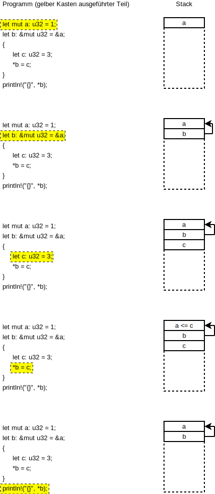

Lifetime
Kurz Auffrischung: Speichermodel
- Ein kurzer Ausflug in die Arbeitsweise des Stacks
- Jeder Variabledeklaration, Funktionsaufruf, etc. belegt normalerweise Speicher auf dem Stack (Optimierung ausgenommen)
- Werden Variablen in einem Scope erzeugt, wird der Stack bis zum Eintritt in dem Scope danach bereinigt
- Der Heap ist ein gesonderter Speicher, von dem Speicherbereiche dynamisch angefordert und freigegeben werden. Eine feste Ordnung wie beim Stack hat dieser nicht

Das Ausleihproblem
- Durch das Ownership/Borrow-Konzept stellt sie die Frage, wie lange Speicherbereiche genutzt werden können
- Gibt es keinen Besitzer mehr und ist der Bereich nicht ausgeliehen, kann der Bereich freigegeben werden
- Rust nutzt keine Garbage Collection und braucht das Wissen über Speichernutzung
fn main() { let mut a; { let b = 1; a = &b; } // b existiert nur im Scope und wird beim Verlassen freigegeben println!("a = {}", *a); }
- Der C-Kompiler würde dies Problem zwar anmerken, das Programm idR. aber übersetzen
- Die Ausführung erzeugt einen Fehler
#include <stdio.h>
static int zero = 0;
int* func() {
int b = 1;
return &b;
}
int main(int argc, char* argv[]) {
int *a = &zero;
a = func();
printf("%i\n", *a);
}
Statische Laufzeit
- Kurzfristige Lösung für viele Probleme mit der Lebenszeit von Objekten
- Kann aber mitunter andere Probleme versachen, da hier ebenfalls wieder mit Referenzen gearbeitet werden muss, wenn die Speicherbereiche eine variable Größe haben sollen
fn main() { let mut a; { static b: i32 = 1; // b ist nun statisch deklariert und überlebt den Scope a = &b; } println!("a = {}", *a); }
Referenzzähler
- Am besten Vergleichbar mit dem
shared_ptrin C++ - bei jedem
clonewird die Referenz erhöht - verlässt die Referenz ihren Scope wird die Referenz heruntergezählt
- Ist die Referenz 0 wird der Bereich freigegeben
use std::rc::Rc; static ONE: i32 = 1; fn main() { let mut a = Rc::new(0); println!("address of a={:p}", a); { let b = Rc::new(ONE); println!("address of b={:p}, address of one={:p}", b, &ONE); a = b.clone(); } println!("address of a={:p} after changing", a); println!("content of a = {}", *a); }
Rcist nicht nicht thread-safe, stattdessen sollteArcverwendet werden